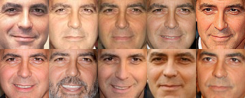
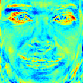
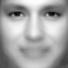
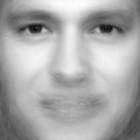
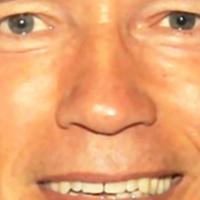

Gender Classification with OpenCV¶
Table of Contents
Introduction¶
A lot of people interested in face recognition, also want to know how to perform image classification tasks like:
- Gender Classification (Gender Detection)
- Emotion Classification (Emotion Detection)
- Glasses Classification (Glasses Detection)
- ...
This is has become very, very easy with the new FaceRecognizer class. In this tutorial I’ll show you how to perform gender classification with OpenCV on a set of face images. You’ll also learn how to align your images to enhance the recognition results. If you want to do emotion classification instead of gender classification, all you need to do is to update is your training data and the configuration you pass to the demo.
Prerequisites¶
For gender classification of faces, you’ll need some images of male and female faces first. I’ve decided to search faces of celebrities using Google Images with the faces filter turned on (my god, they have great algorithms at Google!). My database has 8 male and 5 female subjects, each with 10 images. Here are the names, if you don’t know who to search:
- Angelina Jolie
- Arnold Schwarzenegger
- Brad Pitt
- Emma Watson
- George Clooney
- Jennifer Lopez
- Johnny Depp
- Justin Timberlake
- Katy Perry
- Keanu Reeves
- Naomi Watts
- Patrick Stewart
- Tom Cruise
Once you have acquired some images, you’ll need to read them. In the demo application I have decided to read the images from a very simple CSV file. Why? Because it’s the simplest platform-independent approach I can think of. However, if you know a simpler solution please ping me about it. Basically all the CSV file needs to contain are lines composed of a filename followed by a ; followed by the label (as integer number), making up a line like this:
/path/to/image.ext;0
Let’s dissect the line. /path/to/image.ext is the path to an image, probably something like this if you are in Windows: C:/faces/person0/image0.jpg. Then there is the separator ; and finally we assign a label 0 to the image. Think of the label as the subject (the person, the gender or whatever comes to your mind). In the gender classification scenario, the label is the gender the person has. I’ll give the label 0 to male persons and the label 1 is for female subjects. So my CSV file looks like this:
/home/philipp/facerec/data/gender/male/keanu_reeves/keanu_reeves_01.jpg;0
/home/philipp/facerec/data/gender/male/keanu_reeves/keanu_reeves_02.jpg;0
/home/philipp/facerec/data/gender/male/keanu_reeves/keanu_reeves_03.jpg;0
...
/home/philipp/facerec/data/gender/female/katy_perry/katy_perry_01.jpg;1
/home/philipp/facerec/data/gender/female/katy_perry/katy_perry_02.jpg;1
/home/philipp/facerec/data/gender/female/katy_perry/katy_perry_03.jpg;1
...
/home/philipp/facerec/data/gender/male/brad_pitt/brad_pitt_01.jpg;0
/home/philipp/facerec/data/gender/male/brad_pitt/brad_pitt_02.jpg;0
/home/philipp/facerec/data/gender/male/brad_pitt/brad_pitt_03.jpg;0
...
/home/philipp/facerec/data/gender/female/emma_watson/emma_watson_08.jpg;1
/home/philipp/facerec/data/gender/female/emma_watson/emma_watson_02.jpg;1
/home/philipp/facerec/data/gender/female/emma_watson/emma_watson_03.jpg;1
All images for this example were chosen to have a frontal face perspective. They have been cropped, scaled and rotated to be aligned at the eyes, just like this set of George Clooney images:
You really don’t want to create the CSV file by hand. And you really don’t want scale, rotate & translate the images manually. I have prepared you two Python scripts create_csv.py and crop_face.py, you can find them in the src folder coming with this documentation. You’ll see how to use them in the Appendix.
Fisherfaces for Gender Classification¶
If you want to decide whether a person is male or female, you have to learn the discriminative features of both classes. The Eigenfaces method is based on the Principal Component Analysis, which is an unsupervised statistical model and not suitable for this task. Please see the Face Recognition tutorial for insights into the algorithms. The Fisherfaces instead yields a class-specific linear projection, so it is much better suited for the gender classification task. http://www.bytefish.de/blog/gender_classification shows the recognition rate of the Fisherfaces method for gender classification.
The Fisherfaces method achieves a 98% recognition rate in a subject-independent cross-validation. A subject-independent cross-validation means images of the person under test are never used for learning the model. And could you believe it: you can simply use the facerec_fisherfaces demo, that’s inlcuded in OpenCV.
Fisherfaces in OpenCV¶
The source code for this demo application is also available in the src folder coming with this documentation:
1 2 3 4 5 6 7 8 9 10 11 12 13 14 15 16 17 18 19 20 21 22 23 24 25 26 27 28 29 30 31 32 33 34 35 36 37 38 39 40 41 42 43 44 45 46 47 48 49 50 51 52 53 54 55 56 57 58 59 60 61 62 63 64 65 66 67 68 69 70 71 72 73 74 75 76 77 78 79 80 81 82 83 84 85 86 87 88 89 90 91 92 93 94 95 96 97 98 99 100 101 102 103 104 105 106 107 108 109 110 111 112 113 114 115 116 117 118 119 120 121 122 123 124 125 126 127 128 129 130 131 132 133 134 135 136 137 138 139 140 141 142 143 144 145 146 147 148 149 150 151 152 153 154 155 156 157 158 159 160 161 162 163 164 165 166 167 168 169 170 171 172 173 174 175 176 177 178 179 180 181 182 183 184 185 186 187 188 189 190 191 | /*
* Copyright (c) 2011. Philipp Wagner <bytefish[at]gmx[dot]de>.
* Released to public domain under terms of the BSD Simplified license.
*
* Redistribution and use in source and binary forms, with or without
* modification, are permitted provided that the following conditions are met:
* * Redistributions of source code must retain the above copyright
* notice, this list of conditions and the following disclaimer.
* * Redistributions in binary form must reproduce the above copyright
* notice, this list of conditions and the following disclaimer in the
* documentation and/or other materials provided with the distribution.
* * Neither the name of the organization nor the names of its contributors
* may be used to endorse or promote products derived from this software
* without specific prior written permission.
*
* See <http://www.opensource.org/licenses/bsd-license>
*/
#include "opencv2/core/core.hpp"
#include "opencv2/contrib/contrib.hpp"
#include "opencv2/highgui/highgui.hpp"
#include <iostream>
#include <fstream>
#include <sstream>
using namespace cv;
using namespace std;
static Mat norm_0_255(InputArray _src) {
Mat src = _src.getMat();
// Create and return normalized image:
Mat dst;
switch(src.channels()) {
case 1:
cv::normalize(_src, dst, 0, 255, NORM_MINMAX, CV_8UC1);
break;
case 3:
cv::normalize(_src, dst, 0, 255, NORM_MINMAX, CV_8UC3);
break;
default:
src.copyTo(dst);
break;
}
return dst;
}
static void read_csv(const string& filename, vector<Mat>& images, vector<int>& labels, char separator = ';') {
std::ifstream file(filename.c_str(), ifstream::in);
if (!file) {
string error_message = "No valid input file was given, please check the given filename.";
CV_Error(CV_StsBadArg, error_message);
}
string line, path, classlabel;
while (getline(file, line)) {
stringstream liness(line);
getline(liness, path, separator);
getline(liness, classlabel);
if(!path.empty() && !classlabel.empty()) {
images.push_back(imread(path, 0));
labels.push_back(atoi(classlabel.c_str()));
}
}
}
int main(int argc, const char *argv[]) {
// Check for valid command line arguments, print usage
// if no arguments were given.
if (argc < 2) {
cout << "usage: " << argv[0] << " <csv.ext> <output_folder> " << endl;
exit(1);
}
string output_folder = ".";
if (argc == 3) {
output_folder = string(argv[2]);
}
// Get the path to your CSV.
string fn_csv = string(argv[1]);
// These vectors hold the images and corresponding labels.
vector<Mat> images;
vector<int> labels;
// Read in the data. This can fail if no valid
// input filename is given.
try {
read_csv(fn_csv, images, labels);
} catch (cv::Exception& e) {
cerr << "Error opening file \"" << fn_csv << "\". Reason: " << e.msg << endl;
// nothing more we can do
exit(1);
}
// Quit if there are not enough images for this demo.
if(images.size() <= 1) {
string error_message = "This demo needs at least 2 images to work. Please add more images to your data set!";
CV_Error(CV_StsError, error_message);
}
// Get the height from the first image. We'll need this
// later in code to reshape the images to their original
// size:
int height = images[0].rows;
// The following lines simply get the last images from
// your dataset and remove it from the vector. This is
// done, so that the training data (which we learn the
// cv::FaceRecognizer on) and the test data we test
// the model with, do not overlap.
Mat testSample = images[images.size() - 1];
int testLabel = labels[labels.size() - 1];
images.pop_back();
labels.pop_back();
// The following lines create an Fisherfaces model for
// face recognition and train it with the images and
// labels read from the given CSV file.
// If you just want to keep 10 Fisherfaces, then call
// the factory method like this:
//
// cv::createFisherFaceRecognizer(10);
//
// However it is not useful to discard Fisherfaces! Please
// always try to use _all_ available Fisherfaces for
// classification.
//
// If you want to create a FaceRecognizer with a
// confidence threshold (e.g. 123.0) and use _all_
// Fisherfaces, then call it with:
//
// cv::createFisherFaceRecognizer(0, 123.0);
//
Ptr<FaceRecognizer> model = createFisherFaceRecognizer();
model->train(images, labels);
// The following line predicts the label of a given
// test image:
int predictedLabel = model->predict(testSample);
//
// To get the confidence of a prediction call the model with:
//
// int predictedLabel = -1;
// double confidence = 0.0;
// model->predict(testSample, predictedLabel, confidence);
//
string result_message = format("Predicted class = %d / Actual class = %d.", predictedLabel, testLabel);
cout << result_message << endl;
// Here is how to get the eigenvalues of this Eigenfaces model:
Mat eigenvalues = model->getMat("eigenvalues");
// And we can do the same to display the Eigenvectors (read Eigenfaces):
Mat W = model->getMat("eigenvectors");
// Get the sample mean from the training data
Mat mean = model->getMat("mean");
// Display or save:
if(argc == 2) {
imshow("mean", norm_0_255(mean.reshape(1, images[0].rows)));
} else {
imwrite(format("%s/mean.png", output_folder.c_str()), norm_0_255(mean.reshape(1, images[0].rows)));
}
// Display or save the first, at most 16 Fisherfaces:
for (int i = 0; i < min(16, W.cols); i++) {
string msg = format("Eigenvalue #%d = %.5f", i, eigenvalues.at<double>(i));
cout << msg << endl;
// get eigenvector #i
Mat ev = W.col(i).clone();
// Reshape to original size & normalize to [0...255] for imshow.
Mat grayscale = norm_0_255(ev.reshape(1, height));
// Show the image & apply a Bone colormap for better sensing.
Mat cgrayscale;
applyColorMap(grayscale, cgrayscale, COLORMAP_BONE);
// Display or save:
if(argc == 2) {
imshow(format("fisherface_%d", i), cgrayscale);
} else {
imwrite(format("%s/fisherface_%d.png", output_folder.c_str(), i), norm_0_255(cgrayscale));
}
}
// Display or save the image reconstruction at some predefined steps:
for(int num_component = 0; num_component < min(16, W.cols); num_component++) {
// Slice the Fisherface from the model:
Mat ev = W.col(num_component);
Mat projection = subspaceProject(ev, mean, images[0].reshape(1,1));
Mat reconstruction = subspaceReconstruct(ev, mean, projection);
// Normalize the result:
reconstruction = norm_0_255(reconstruction.reshape(1, images[0].rows));
// Display or save:
if(argc == 2) {
imshow(format("fisherface_reconstruction_%d", num_component), reconstruction);
} else {
imwrite(format("%s/fisherface_reconstruction_%d.png", output_folder.c_str(), num_component), reconstruction);
}
}
// Display if we are not writing to an output folder:
if(argc == 2) {
waitKey(0);
}
return 0;
}
|
Running the Demo¶
If you are in Windows, then simply start the demo by running (from command line):
facerec_fisherfaces.exe C:/path/to/your/csv.ext
If you are in Linux, then simply start the demo by running:
./facerec_fisherfaces /path/to/your/csv.ext
If you don’t want to display the images, but save them, then pass the desired path to the demo. It works like this in Windows:
facerec_fisherfaces.exe C:/path/to/your/csv.ext C:/path/to/store/results/at
And in Linux:
./facerec_fisherfaces /path/to/your/csv.ext /path/to/store/results/at
Results¶
If you run the program with your CSV file as parameter, you’ll see the Fisherface that separates between male and female images. I’ve decided to apply a Jet colormap in this demo, so you can see which features the method identifies:
The demo also shows the average face of the male and female training images you have passed:
Moreover it the demo should yield the prediction for the correct gender:
Predicted class = 1 / Actual class = 1.
And for advanced users I have also shown the Eigenvalue for the Fisherface:
Eigenvalue #0 = 152.49493
And the Fisherfaces reconstruction:
I hope this gives you an idea how to approach gender classification and the other image classification tasks.
Appendix¶
Creating the CSV File¶
You don’t really want to create the CSV file by hand. I have prepared you a little Python script create_csv.py (you find it at /src/create_csv.py coming with this tutorial) that automatically creates you a CSV file. If you have your images in hierarchie like this (/basepath/<subject>/<image.ext>):
philipp@mango:~/facerec/data/at$ tree
.
|-- s1
| |-- 1.pgm
| |-- ...
| |-- 10.pgm
|-- s2
| |-- 1.pgm
| |-- ...
| |-- 10.pgm
...
|-- s40
| |-- 1.pgm
| |-- ...
| |-- 10.pgm
Then simply call create_csv.py with the path to the folder, just like this and you could save the output:
philipp@mango:~/facerec/data$ python create_csv.py
at/s13/2.pgm;0
at/s13/7.pgm;0
at/s13/6.pgm;0
at/s13/9.pgm;0
at/s13/5.pgm;0
at/s13/3.pgm;0
at/s13/4.pgm;0
at/s13/10.pgm;0
at/s13/8.pgm;0
at/s13/1.pgm;0
at/s17/2.pgm;1
at/s17/7.pgm;1
at/s17/6.pgm;1
at/s17/9.pgm;1
at/s17/5.pgm;1
at/s17/3.pgm;1
[...]
Here is the script, if you can’t find it:
1 2 3 4 5 6 7 8 9 10 11 12 13 14 15 16 17 18 19 20 21 22 23 24 25 26 27 28 29 30 31 32 33 34 35 36 37 38 39 40 41 42 43 | #!/usr/bin/env python
import sys
import os.path
# This is a tiny script to help you creating a CSV file from a face
# database with a similar hierarchie:
#
# philipp@mango:~/facerec/data/at$ tree
# .
# |-- README
# |-- s1
# | |-- 1.pgm
# | |-- ...
# | |-- 10.pgm
# |-- s2
# | |-- 1.pgm
# | |-- ...
# | |-- 10.pgm
# ...
# |-- s40
# | |-- 1.pgm
# | |-- ...
# | |-- 10.pgm
#
if __name__ == "__main__":
if len(sys.argv) != 2:
print "usage: create_csv <base_path>"
sys.exit(1)
BASE_PATH=sys.argv[1]
SEPARATOR=";"
label = 0
for dirname, dirnames, filenames in os.walk(BASE_PATH):
for subdirname in dirnames:
subject_path = os.path.join(dirname, subdirname)
for filename in os.listdir(subject_path):
abs_path = "%s/%s" % (subject_path, filename)
print "%s%s%d" % (abs_path, SEPARATOR, label)
label = label + 1
|
Aligning Face Images¶
An accurate alignment of your image data is especially important in tasks like emotion detection, were you need as much detail as possible. Believe me... You don’t want to do this by hand. So I’ve prepared you a tiny Python script. The code is really easy to use. To scale, rotate and crop the face image you just need to call CropFace(image, eye_left, eye_right, offset_pct, dest_sz), where:
- eye_left is the position of the left eye
- eye_right is the position of the right eye
- offset_pct is the percent of the image you want to keep next to the eyes (horizontal, vertical direction)
- dest_sz is the size of the output image
If you are using the same offset_pct and dest_sz for your images, they are all aligned at the eyes.
1 2 3 4 5 6 7 8 9 10 11 12 13 14 15 16 17 18 19 20 21 22 23 24 25 26 27 28 29 30 31 32 33 34 35 36 37 38 39 40 41 42 43 44 45 46 47 48 49 50 51 52 53 54 55 56 57 58 59 60 61 62 63 64 65 66 67 68 69 70 71 72 73 74 75 76 77 78 79 80 81 82 83 84 85 86 87 88 89 | #!/usr/bin/env python
# Software License Agreement (BSD License)
#
# Copyright (c) 2012, Philipp Wagner
# All rights reserved.
#
# Redistribution and use in source and binary forms, with or without
# modification, are permitted provided that the following conditions
# are met:
#
# * Redistributions of source code must retain the above copyright
# notice, this list of conditions and the following disclaimer.
# * Redistributions in binary form must reproduce the above
# copyright notice, this list of conditions and the following
# disclaimer in the documentation and/or other materials provided
# with the distribution.
# * Neither the name of the author nor the names of its
# contributors may be used to endorse or promote products derived
# from this software without specific prior written permission.
#
# THIS SOFTWARE IS PROVIDED BY THE COPYRIGHT HOLDERS AND CONTRIBUTORS
# "AS IS" AND ANY EXPRESS OR IMPLIED WARRANTIES, INCLUDING, BUT NOT
# LIMITED TO, THE IMPLIED WARRANTIES OF MERCHANTABILITY AND FITNESS
# FOR A PARTICULAR PURPOSE ARE DISCLAIMED. IN NO EVENT SHALL THE
# COPYRIGHT OWNER OR CONTRIBUTORS BE LIABLE FOR ANY DIRECT, INDIRECT,
# INCIDENTAL, SPECIAL, EXEMPLARY, OR CONSEQUENTIAL DAMAGES (INCLUDING,
# BUT NOT LIMITED TO, PROCUREMENT OF SUBSTITUTE GOODS OR SERVICES;
# LOSS OF USE, DATA, OR PROFITS; OR BUSINESS INTERRUPTION) HOWEVER
# CAUSED AND ON ANY THEORY OF LIABILITY, WHETHER IN CONTRACT, STRICT
# LIABILITY, OR TORT (INCLUDING NEGLIGENCE OR OTHERWISE) ARISING IN
# ANY WAY OUT OF THE USE OF THIS SOFTWARE, EVEN IF ADVISED OF THE
# POSSIBILITY OF SUCH DAMAGE.
import sys, math, Image
def Distance(p1,p2):
dx = p2[0] - p1[0]
dy = p2[1] - p1[1]
return math.sqrt(dx*dx+dy*dy)
def ScaleRotateTranslate(image, angle, center = None, new_center = None, scale = None, resample=Image.BICUBIC):
if (scale is None) and (center is None):
return image.rotate(angle=angle, resample=resample)
nx,ny = x,y = center
sx=sy=1.0
if new_center:
(nx,ny) = new_center
if scale:
(sx,sy) = (scale, scale)
cosine = math.cos(angle)
sine = math.sin(angle)
a = cosine/sx
b = sine/sx
c = x-nx*a-ny*b
d = -sine/sy
e = cosine/sy
f = y-nx*d-ny*e
return image.transform(image.size, Image.AFFINE, (a,b,c,d,e,f), resample=resample)
def CropFace(image, eye_left=(0,0), eye_right=(0,0), offset_pct=(0.2,0.2), dest_sz = (70,70)):
# calculate offsets in original image
offset_h = math.floor(float(offset_pct[0])*dest_sz[0])
offset_v = math.floor(float(offset_pct[1])*dest_sz[1])
# get the direction
eye_direction = (eye_right[0] - eye_left[0], eye_right[1] - eye_left[1])
# calc rotation angle in radians
rotation = -math.atan2(float(eye_direction[1]),float(eye_direction[0]))
# distance between them
dist = Distance(eye_left, eye_right)
# calculate the reference eye-width
reference = dest_sz[0] - 2.0*offset_h
# scale factor
scale = float(dist)/float(reference)
# rotate original around the left eye
image = ScaleRotateTranslate(image, center=eye_left, angle=rotation)
# crop the rotated image
crop_xy = (eye_left[0] - scale*offset_h, eye_left[1] - scale*offset_v)
crop_size = (dest_sz[0]*scale, dest_sz[1]*scale)
image = image.crop((int(crop_xy[0]), int(crop_xy[1]), int(crop_xy[0]+crop_size[0]), int(crop_xy[1]+crop_size[1])))
# resize it
image = image.resize(dest_sz, Image.ANTIALIAS)
return image
if __name__ == "__main__":
image = Image.open("arnie.jpg")
CropFace(image, eye_left=(252,364), eye_right=(420,366), offset_pct=(0.1,0.1), dest_sz=(200,200)).save("arnie_10_10_200_200.jpg")
CropFace(image, eye_left=(252,364), eye_right=(420,366), offset_pct=(0.2,0.2), dest_sz=(200,200)).save("arnie_20_20_200_200.jpg")
CropFace(image, eye_left=(252,364), eye_right=(420,366), offset_pct=(0.3,0.3), dest_sz=(200,200)).save("arnie_30_30_200_200.jpg")
CropFace(image, eye_left=(252,364), eye_right=(420,366), offset_pct=(0.2,0.2)).save("arnie_20_20_70_70.jpg")
|
Imagine we are given this photo of Arnold Schwarzenegger, which is under a Public Domain license. The (x,y)-position of the eyes is approximately (252,364) for the left and (420,366) for the right eye. Now you only need to define the horizontal offset, vertical offset and the size your scaled, rotated & cropped face should have.
{kind=link}
Here are some examples:
| Configuration | Cropped, Scaled, Rotated Face |
|---|---|
| 0.1 (10%), 0.1 (10%), (200,200) |  |
| 0.2 (20%), 0.2 (20%), (200,200) | |
| 0.3 (30%), 0.3 (30%), (200,200) | |
| 0.2 (20%), 0.2 (20%), (70,70) | 
|
Help and Feedback
You did not find what you were looking for?- Ask a question on the Q&A forum.
- If you think something is missing or wrong in the documentation, please file a bug report.

Table Of Contents
Previous topic
Next topic
Face Recognition in Videos with OpenCV